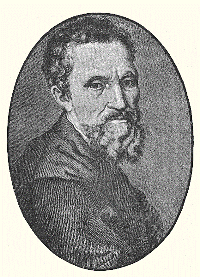

MICHELANGELO
YAŞAMI
Michelangelo, 6 Mart 1475'te Arezzo yakınlarında Caprese’de doğar. Ailesi, o daha bir aylıkken
Floransa’ya taşınır. Annesi, kendisi altı yaşındayken ölen Michelangelo, 13 yaşına geldiğinde
Floransa’da fresk ressamı Domenico Ghirlandaio’nun yanına öğrenci olarak verilir. Bertoldo di
Giovanni’nin zamanında, Medici ailesine ait olan San Marko bahçesinde çalışan genç Michelangelo, bu
arada Lorenzo de Medici ile tanışır.
Michelangelo, heykeltıraştaki rüştünü kanıtladığı ilk ve en ünlü eseri olan çocuk kral Davud’un
heykelini yaptığında henüz 26 yaşındadır. Beş buçuk metrelik bir mermer kütleden çıkaracağı eser
için genç dâhi, mermer bloğun yanına bir baraka inşa ederek, yardımcısız bir şekilde, çoğu zaman
geceli gündüzlü çalışarak Rönesans sanatının harikalarından biri olarak kabul edilen David’i
yaratır.
1505 yılında Papa 2. Julius tarafından kendisine, en önemli başarılarından biri olacak Vatikan’ın
yanındaki Sistine Şapeli’nin tavan resimlerinin yapılması işi verilir. 3 yıl sonra başlayacağı bu
görevi sanatçı, 520 metrekarelik bir alanda yaklaşık dört yıllık bir çalışmanın ürünü olarak
bitirir. Ortasının da, her biri Âdem, Havva ve Nuh Tufanıyla ilgili İncil’in eski Ahdi’nden alınma
öykülerden esinlenerek yapılan resimlerin bulunduğu dokuz pano bulunan freskin yan unsurları da
mitolojik figürlerle bezelidir. Özellikle “Âdemin Yaratılışı” ismindeki sahne batı resim sanatının
en canlı tasvirlerinden biri kabul edilir.
1519 yılında Cosimo de Medici’nin soyunun son temsilcisi Lorenzo de Medici’nin ölmesiyle
Michelangelo, onla birlikte genç yaşta ölen Nemours Dükü Giuliano’nun mezarlarının konulduğu
kiliseye iki ünlünün heykelini yapar. 1534’te Papa 3. Paul’un heykeltraşı ve mimarı yapılan
Michelangelo’ya Sistine Kilisesi’nin sunak duvarına bir ‘Kıyamet Günü’ tasviri yapmasını ister.
Meryem’in Göğe Yükselişi, İsa’nın Vaftizi ve Musa’nın Hükmü’nün anlatıldığı freskler süsler bu
duvarı.
Kıyamet Günü tablosuna başından beri muhalefet eden yeni Papa 4. Paul ise, tablodaki imgelerin
fazlaca müstehcen göründüğünü belirterek Michelangelo’dan tabloyu biraz daha ‘düzgün’ hale
getirmesini isteyince, ustanın cevabı şu olur: “Papa’ya söyleyin, bu küçük bir mesele ve kolaylıkla
uygun hale getirilebilir. Önce kendisi yaşadığımız bu dünyayı uygun ve yaşanılır bir hale getirsin,
sonra da bu tablo da aynı uygunluğa girecektir.” Michelangelo’nun yaşadığı çağ, kendisiyle boy
ölçüşebilecek derecede yetkin ressam ve heykeltıraşçılara da tanıktır aynı zamanda.
Bunların başında Rafael ve Leonardo Da Vinci gelir. Bu sanatçılar arasında keskin ancak hoşça bir
rekabet vardır. Anlatılan bir öyküye göre, sanatçının rakiplerinden Rafael ve Bramante, işbirliği
yaparak Michelangelo’ya Sistine Kilisesinin işini verdirmeye çalışırlar. Böylelikle, kendini
ressamdan çok bir heykeltıraş olarak kabul eden Michelangelo, bu işi kabul etmeyerek Papanın
gözünden düşecektir. Hayatının son dönemini Roma’daki Aziz Peter Kilisesi’nin mimarı olarak geçiren
Michelangelo 18 Şubat 1564'te 89 yaşında ölür.
Rönesans sanatına benzersiz bir etkide bulunan Michelangelo, klasik sanat tekniklerini öğrenmesinin
yanı sıra asıl olarak, insan formunu her açıdan tasvir edebilmek için kadavralar üzerinde çalışıp,
Yunan ve Roma sanatından devraldığı idealleştirilmiş insan tasarımlarını ulaştığı gerçekçilik
boyutunu yakalamaya çalışır. Batı resminin babası olarak bilinen Giotto’nun resmindeki doğallık ve
gerçekçilik ile 15. yüzyıl başında tam olarak anlaşılabilen derinlikte perspektif olgusunu
geliştirip kendi tarzına temel yapan Michelangelo onlarca heykel, freske imza atıp Roma’nın yeniden
inşa ve düzenlenmesinde de önemli görevler almıştır.
Michelangelo’nun Davut Heykeli, Michelangelo Buonarroti tarafından 1504 tarihinde tamamlanmıştır.
(Başlangıç 1501) Geniş çevrelerce, Michelangelo’nun (Pietà ile birlikte) en iyi iki heykelinden biri
ve Rönesans heykel sanatının bir başyapıtı kabul edilmektedir. Eser, Davut’un Golyat’a saldırmaya
karar verdiği anı simgelemektedir. 5,17 metre yüksekliğindeki mermer heykel Floransa’nın bir sembolü
niteliğindedir. Heykelin tamamı 8 Eylül 1504 tarihinde ortaya çıkarılmıştır.
Figürün omzunun üzerinde dikkat çeken sapanın yanısıra figürde neredeyse mükemmel ‘insan oranı’
betimlenmiştir. Michelangelo’nun Davut heykeli erkek insan form bilgisi esas alınarak disegno
sanatsal disiplini ile temellendirilmiştir. Bu disipline göre heykel en iyi sanat şekli olarak
ortaya konmuştur, çünkü ilahi yaratılışı taklit etmektedir. Michelangelo bu disipline olan
bağlılığını şu davranış şekliyle ortaya koymuştur: Sanki Davut onun çalıştığı mermer bloğun zaten
içindedir ve onu dışarıya çıkarmak ister! (Aynı insan ruhunun bedenin derinliklerinde bulunduğuna
olan genel inanç gibi. Bu ayrıca contrapposto stilinin de bir örneğidir.)
Esasında gerçek insan oranları gözetildiğinde heykelin oranları oldukça farklıdır. Baş ve üst-vücut,
alt-vücut oranlarına göre daha büyüktür. Kimileri bunu maniyerist stile dayandırsa da, en kabul
görmüş açıklama heykelin bir kilise cephesine veya yüksek bir kaidenin üzerine oturtulma amacıyla
hazırlanmış olması ve bu şekilde bir açıdan bakıldığında oranların doğru görülecek olmasıdır.
Heykel ilk olarak Palazzo della Signoria’nın tam önündeki Piazza Signoria’ya yerleştirilmiş; başına
gelebilecek her türlü zararı engellemek için, 1873’te Floransa’daki Akademi Galerisi’ne
götürülmüştür. Burada sayısız ziyaretçisini hala etkilemekte olan eserin bir replikası 1910’da
Piazza Signoria’ya yerleştirilmiştir.
1991 yılında bir kişi heykele çekiçle saldırmış, durdurulmadan önce de sol ayak parmaklarına zarar
vermiştir. 2003’te heykelin temizlenmesinde su kullanılmasına ilişkin bir tartışma olmuştur. Bu,
heykelin 1843’ten beri ilk büyük temizliğidir.
Davut’un Kudüs’ü fethinin 3000. yılına ilişkin, heykelin bir replikası Floransa’dan Kudüs’e bir
armağan olarak gönderilmiştir. Sunulan bu armağan şehirde bir fırtına koparmış, dinsel çatışmalar
sonucunda bu çıplak figürün pornografi içerdiğine ve kabul edilmemesi gerektiğine karar verilmiştir.
En sonunda bir uzlaşma sağlanmış, Davut yerine başka bir heykelin tamamen "giyinik" replikası
armağan olarak şehre gönderilmiştir.
Dünya çapında eserin birebir boyutta replikaları mevcuttur. Londra’da Victoria ve Albert
Müzesi’ndeki alçıdan bir kopyasından, Avustralya’daki Surfers Paradise alıveriş merkezine kadar… Los
Angeles Kaliforniya’daki bir malikanenin üzeri ve çevresi heykelin 23 küçültülmüş boyutta replikası
ile çevrilmiştir. Bir kopyası da ayrıca Las Vegas’taki Caesars Palace’da Appian Way Shops’ı
onurlandırmaktadır.